照片輔助建模 · 身分已確認 · 外形與風格待確認 · 現有地圖未修改
沒有使用 Meshy／Tripo，沒有扣點或付費。背面、遮擋處與尺寸是明示的推定，不是實測重建。Blender 檔中的 LANDMARK 集合是模型，PREVIEW 集合與燈光、相機僅供預覽。
6,910 三角面 · 公尺單位 · 原生可編輯網格
Blender原生網格建模；未使用Meshy/Tripo，未上傳原照片
樹木與人群遮擋處、背面及地下基底為推定。主岩體未變成駱駝動物。
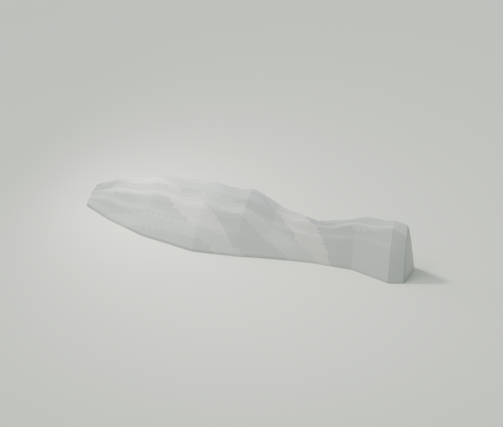
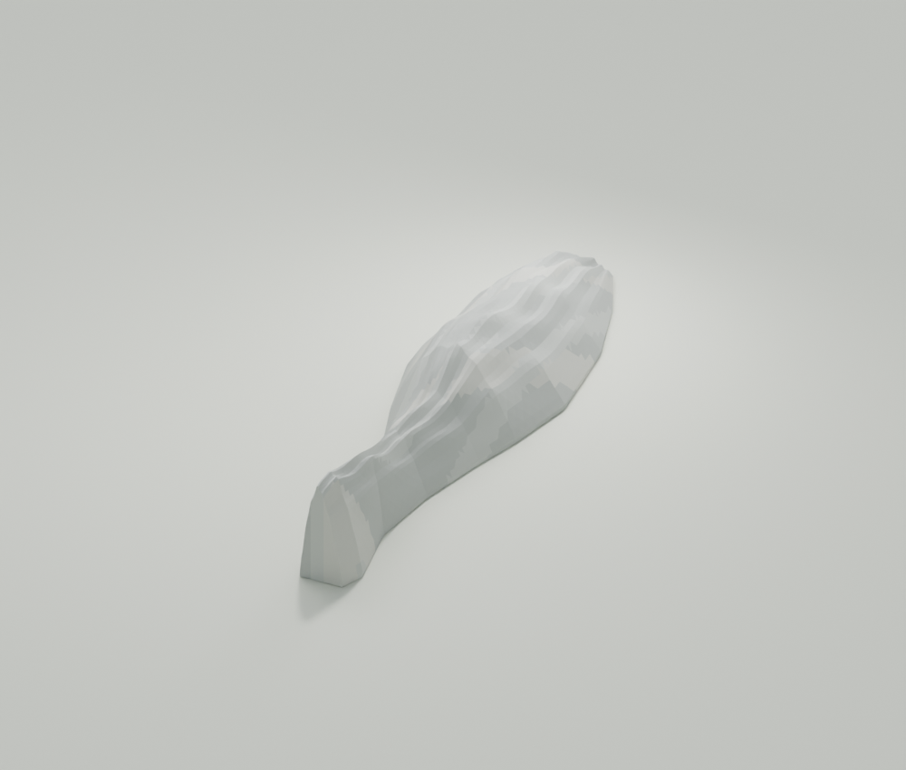
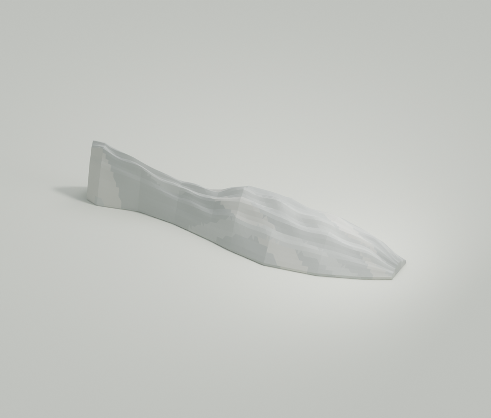
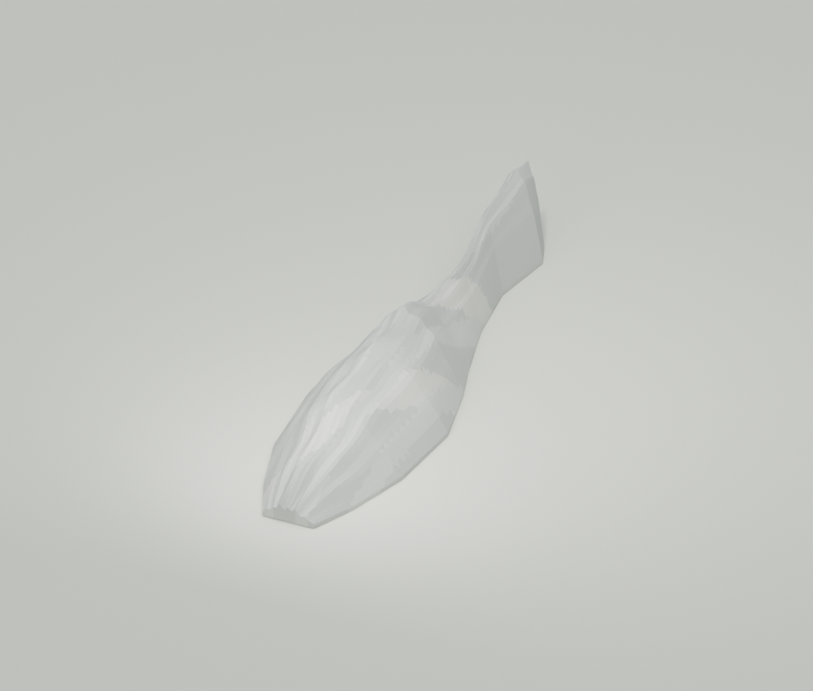
landmark.glb · landmark.blend · model.json
21,072 三角面 · 公尺單位 · 原生可編輯網格
背側梁架、屋頂頂部細節及隱藏構造為簡化推定。
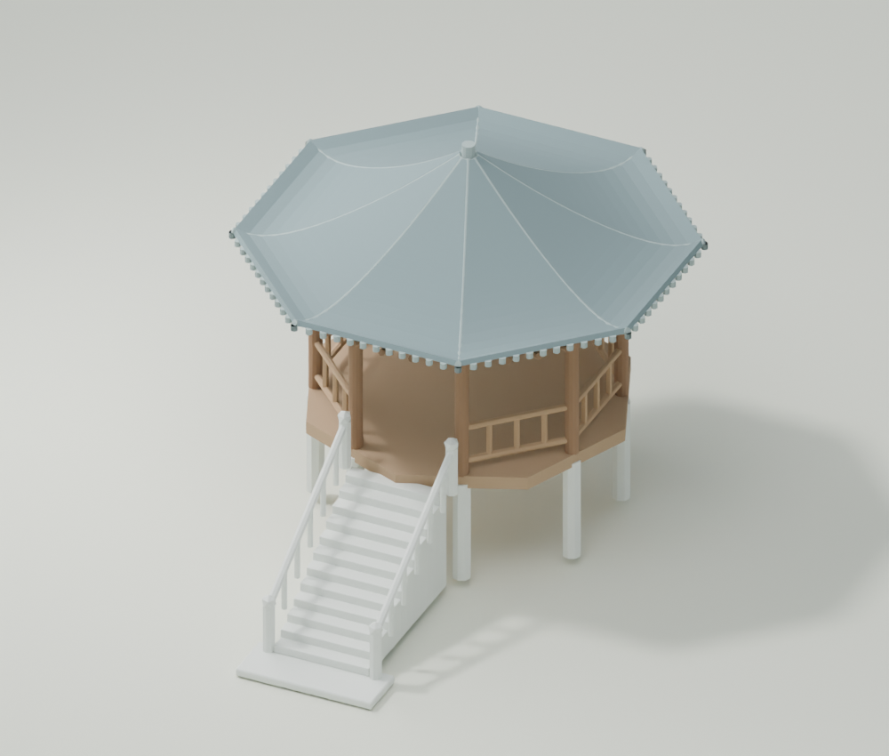
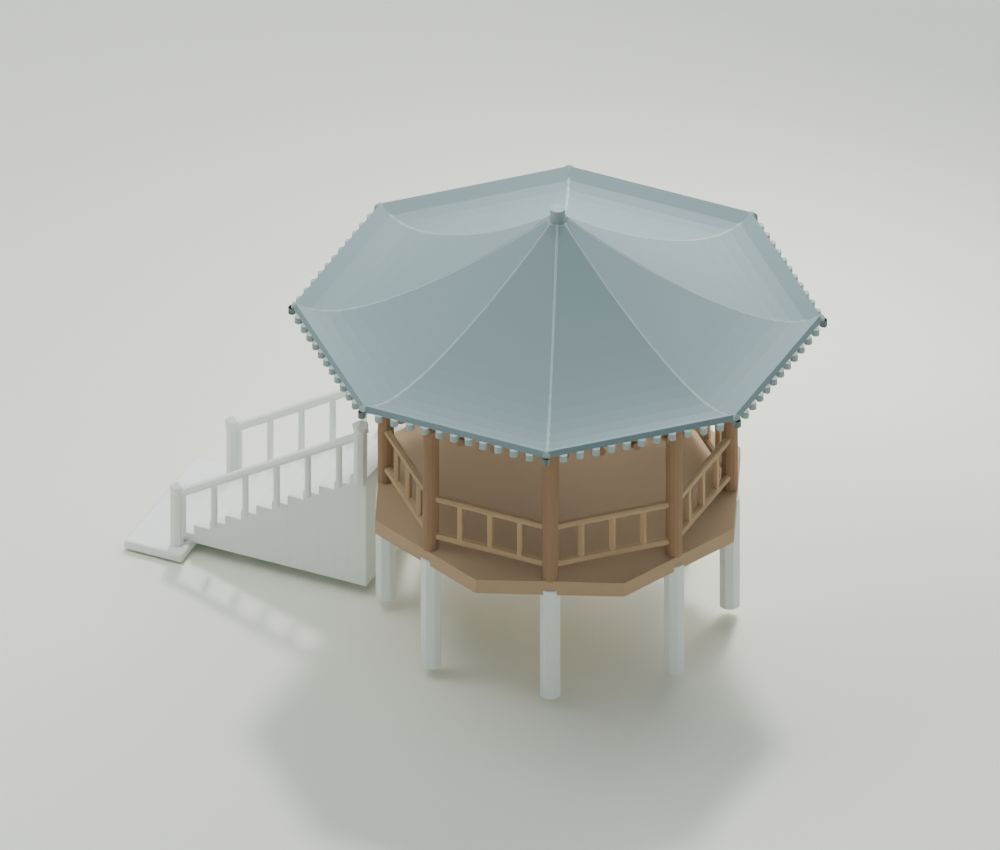
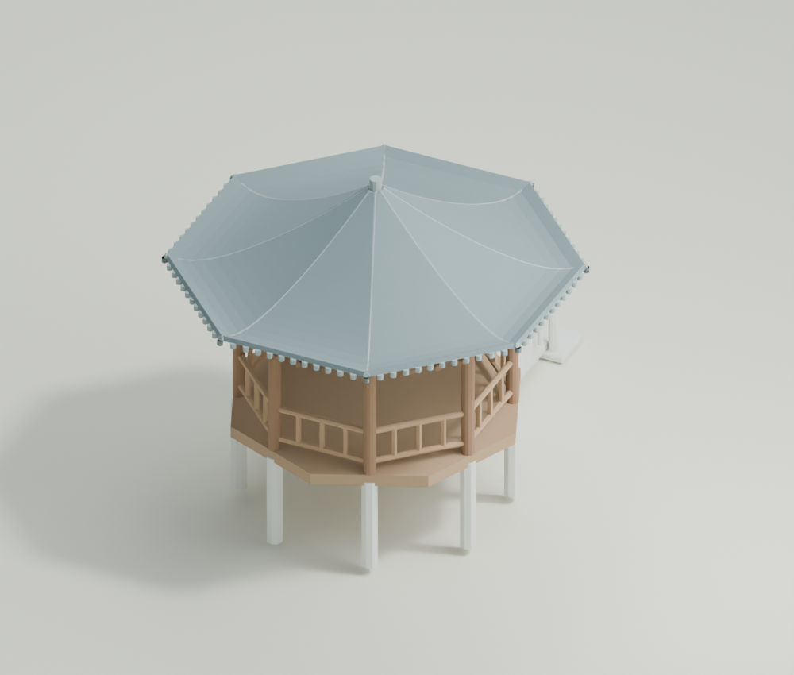
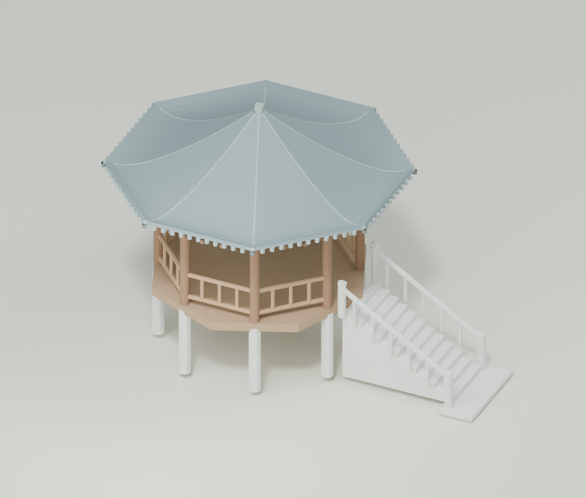
landmark.glb · landmark.blend · model.json · roof.glb · stairs.glb · structure.glb
13,378 三角面 · 公尺單位 · 原生可編輯網格
照片中被松樹遮住的道路連接、平台後方及石塊數量位置為簡化推定。不包含禱告奇蹟松模型。
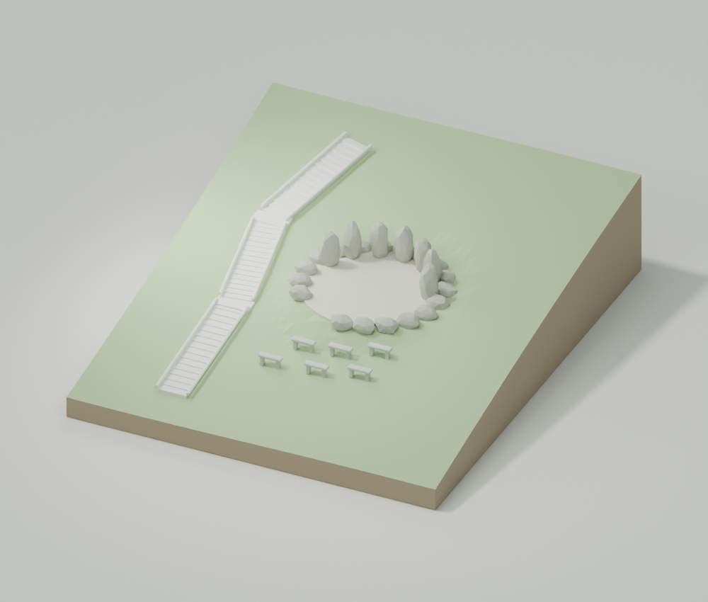
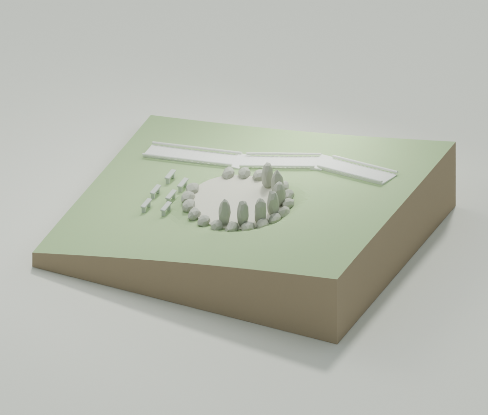
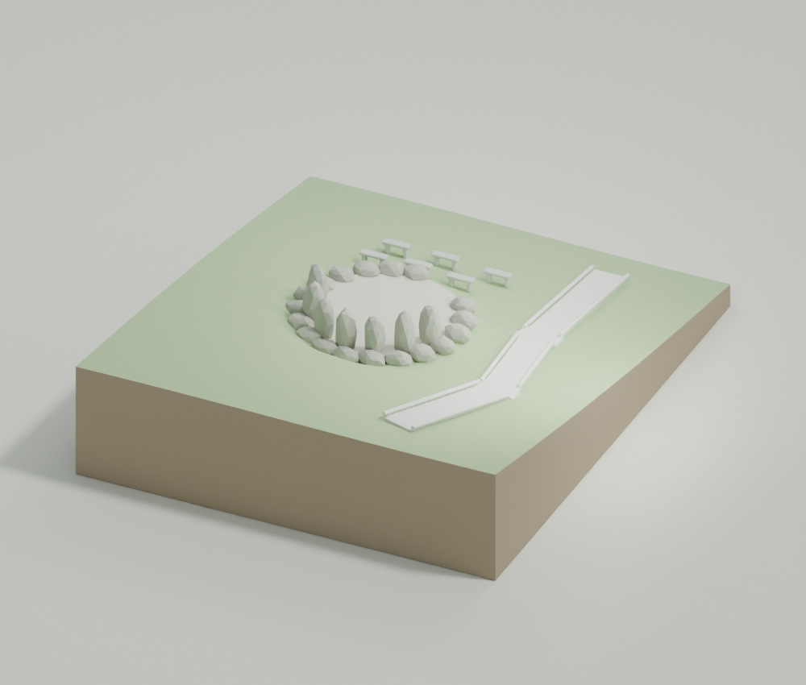
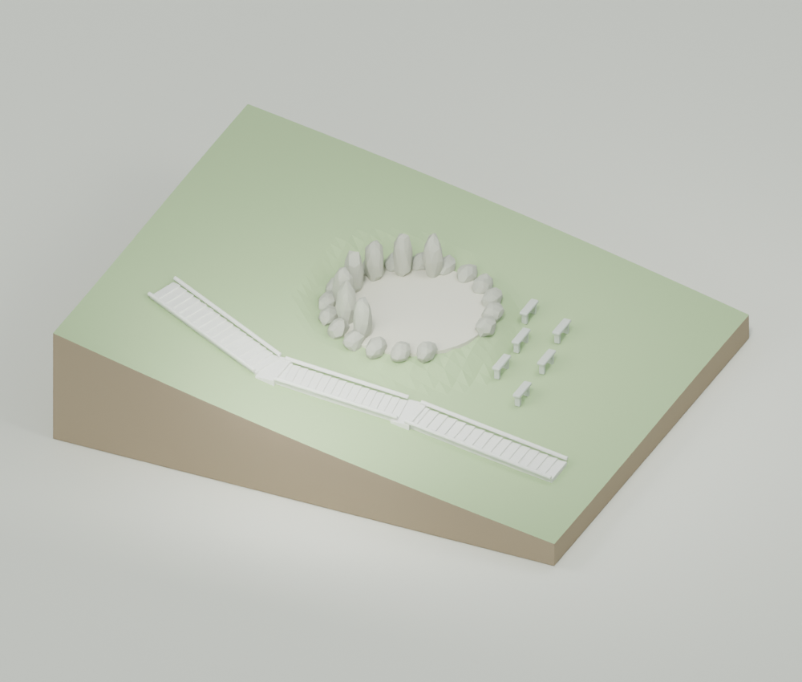
landmark.glb · landmark.blend · model.json · terrain.glb · stairs.glb · platform.glb